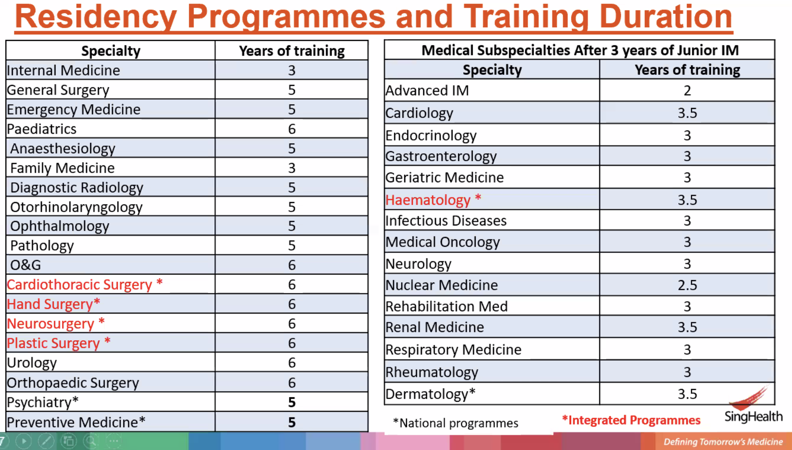
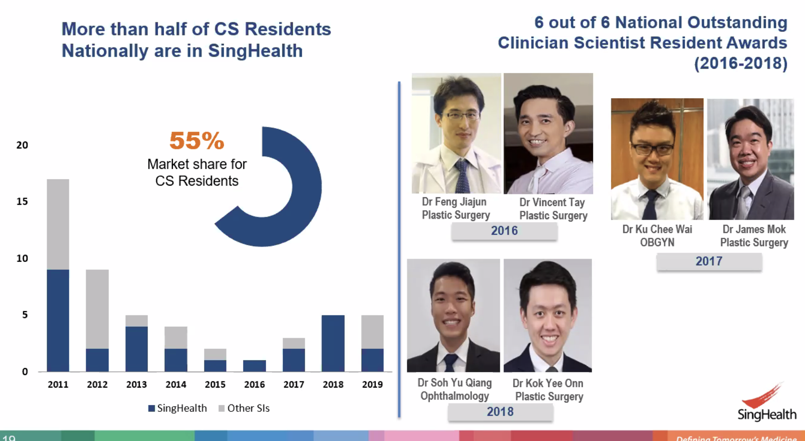
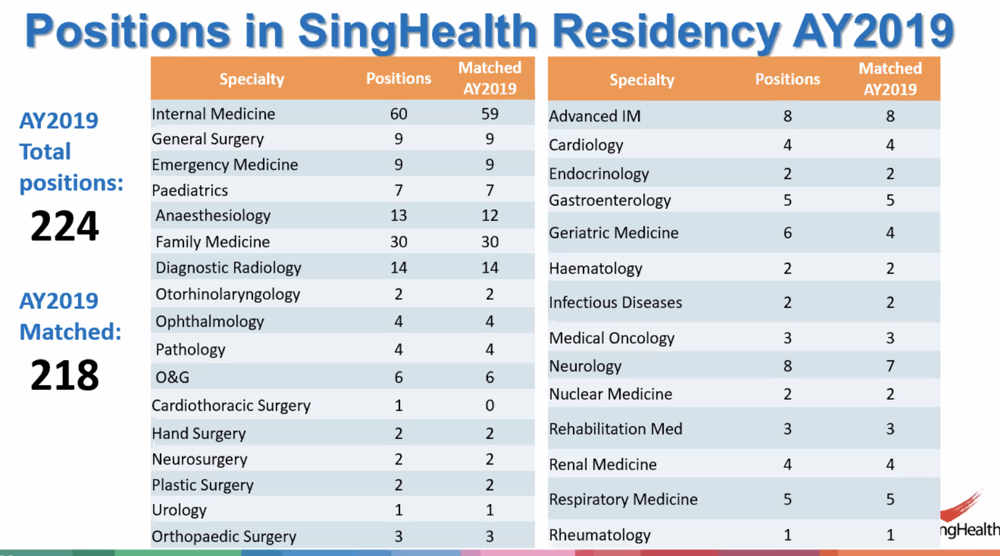
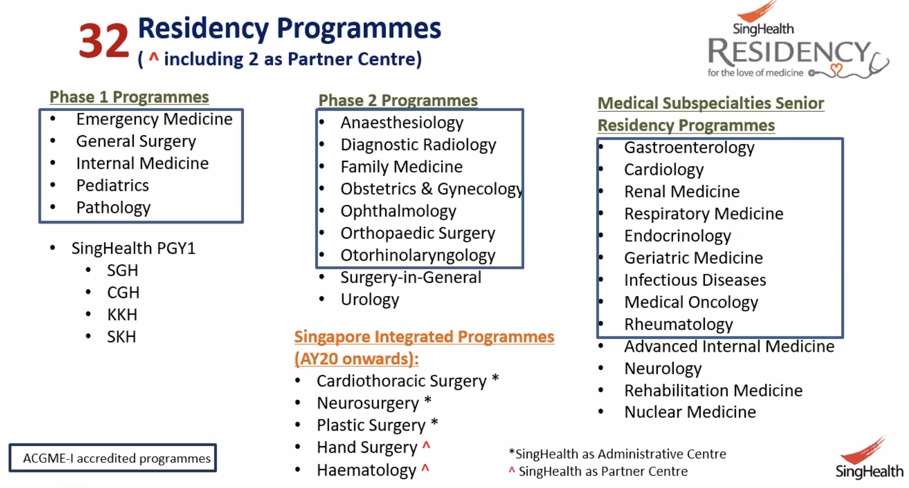
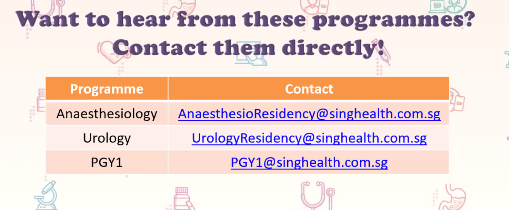

People¶
JIa Hao - ED - SOLID! 96252639
Prof Tan Hak Koon
Cheong May Anne
Dr Melvin Chua
Emergency
- Lim jia ho (ED) ED physician 96252639, lim.jia.hao@singhealth.com.sg
- wan.paul.weng@singhealth.com.sg
Singhealth¶
- AMEI
- Practice is centre based
- Childcare service at Singhealth is free




-
Only the things in the blue boxes are ACGME accredited
-
PGY1 request for elective in specialty that I want
-
Intake for residency starts in July
-
Complete PGY1 or HO training in overseas institution
-
What is quality
-
Resilience, don't give up, commitment
- Team player
- Everyone has brain, no problem studying
- What differentiate one from other is the additional experiences

Cheong May Anne Singhealth Residency Experience
- Hematology
- A lot of mishaps and randomness
- All 2012 graduation.
- Make friends with the nurses
- Case Write-ups: keep notes to do them
- Become a very strong clinician
- May Anne Cheong - research projects
- Residence committee chair
- Organised a hackathon 2017
- IVY Ng is her leadership training mentor
- Overseas collaboration - strong ties with Duke-Durham; visit haematology
- From clinical care to research opportunities
- Other residents are friends
- Think of this as a marriage
- Singhealth has a lot of work...
Questions
- PGY 1 electives engagement in November
- What's the CGH and SKH case difference and culture from SGH?
- MOHH website for various stages of residency application
Emergency Department¶
juliana.poh@singhealth.com.sg - Taught us AMS / syncope / dizziness
Ophthalmology¶
Shamira Perera¶
- Simulation Side: TouchSurgery - cartoonifiedan operation for patient education; learn and test yourself on surgery; Downloaded
- Medical Devices: EnChroma glasses - dimmer; put onto the smart phone; Color blind
- Michael Jared: give projects to people at NUS and ask them
- First embedded engineering center in eye
- Biomechanics and surgery devices
- Some AI work
- Big fish in a small sea
- Gene therapy
- Drugs to the eye
- Bionic eyes
- Biological systems link up with electrical systems
- Ong Tien 2014 to bring an engineer in from NUS
- Business development team
- Design studio; maker space
- Rachael is old PhD from Cambridge; oraganials
- Clinical Investigator: KIP is half of clinical scientist
- Research
- Biomechanics:
- pupil extender - mechanical ways; shape memory; chemical dilator replacement; FEM
- cataract surgery take out the surgery and replace with a clear lens; inject the lens require a lot of different injectors (different for each type of lens); invented disposable single handed injector that fits all lens around
- low-tech, high volume devices;
- reverse the trend of the increased healthcare cost
- AI projects:
- Surgical Device:
- Collaboration with EMBS
- Assisted devices for the blind
- Counting money and for manuveuring
- Patent search
- Scale product
- Marketing and graphical distribution etc
- Big Vision Projects
- Clinical Work
- Research
- Teaching Education
- Innovation
- Humanitarian Work
- Next Big Project: Tricoder
- Machines in optomology that you are very dependent upon
- Big machine and miniturize into a mobile phone
- Acuity, refraction, contrast sensitive, look into the eyes
- X-prize - build a device with 10 functionality
- 5000 OCT, work through 10000 dollar machine
- Far along the lines of that one
- Bioengineering: more ideas in the last two week
- Lack of dedication not lack of time right now
Last update: June 21, 2020